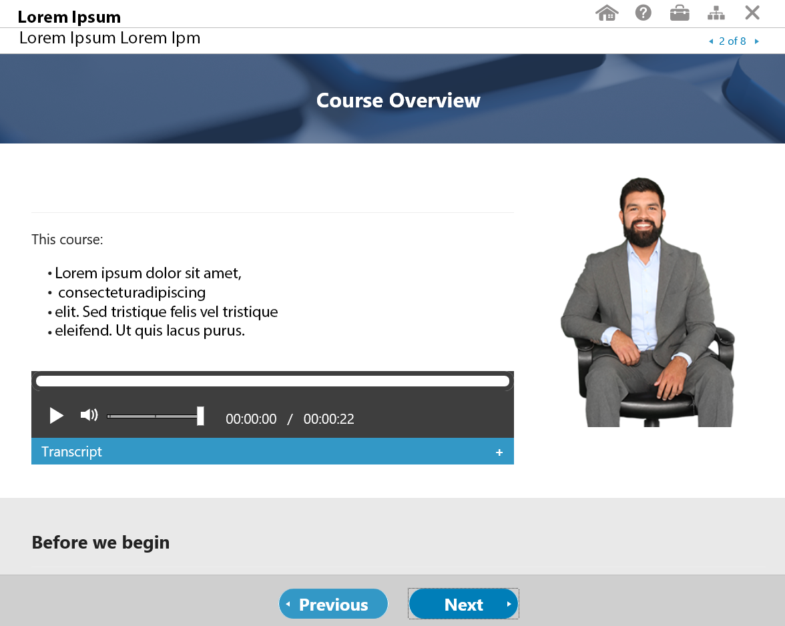

×
Web learning platforms

For my period of time working for the ESDC(employment social development Canada) I came
with 2 challenges. First I had to develop two courses for a business line and try my
best to get them to look and feel the best they could, without my supervisors being
around to check on me. secondly, make an image come true using HTML, CSS & Bootstrap. It
took a while and a full day of programming but it happened. The HTML, CSS & bootstrap
worked well in making the image responsive